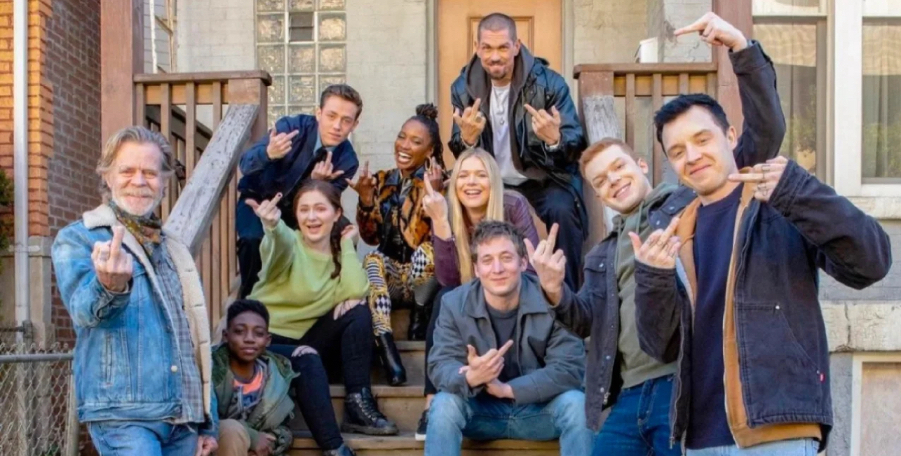
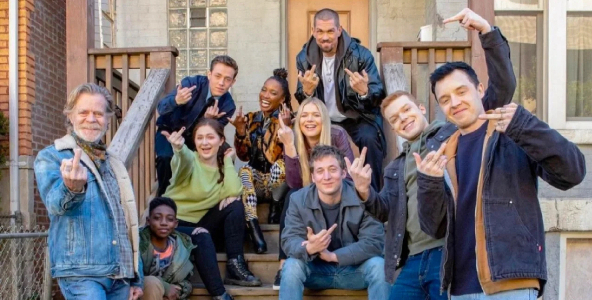
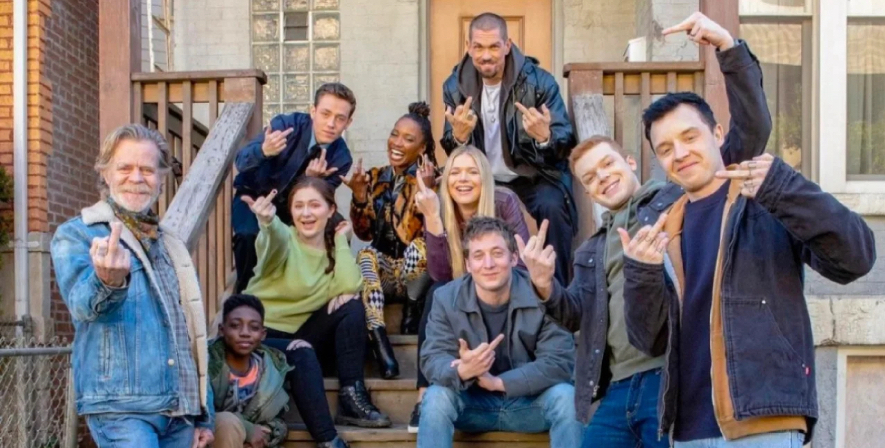
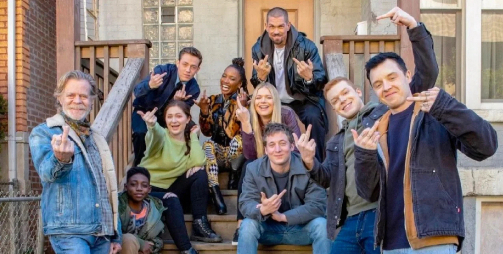

FEAT.
· MUSIC SHARING😜(MONTAGE)
· LIFE-LONG POSITIVE ATTITUDE
CRESCENDO🍾
· NOT ANTI-HOMOSEXTUAL
BUT LOVE SPREADING🥰
LUV IAN&MIK🥹🥹🥹
· CURSE YET POWERFUL💪
·FROM BEGINNING
·TO THE DENOUEMENT
BTW LUV FI🥹🥹🥹
·TWO FAMILY PHOTOS👪
 


